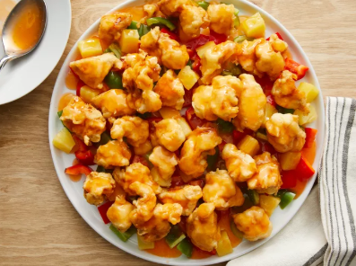

Sweet and Sour Chicken is a popular Chinese-American dish known for its vibrant flavor and colorful presentation. Tender pieces of chicken are first battered and fried until crispy, then tossed in a glossy sauce that strikes a perfect balance between sweet and tangy. The sauce is made with ingredients like vinegar, sugar, ketchup, and soy sauce, giving it a bold flavor. Bell peppers, onions, and pineapple chunks are often added for extra crunch and juiciness. Served hot over a bed of steamed rice or noodles, this dish offers a delightful contrast of textures and tastes in every bite.
Prepare the Chicken
Cook the Vegetables
Make the Sauce
Combine Everything
Serve